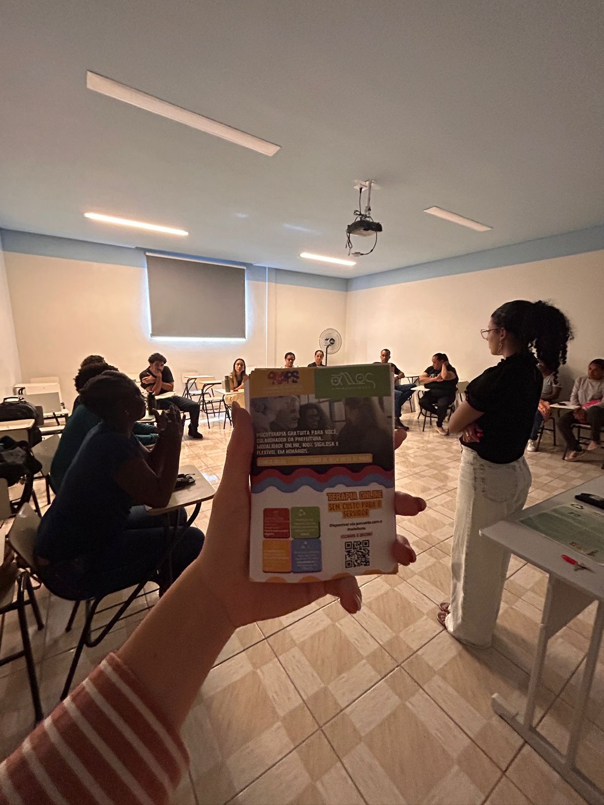
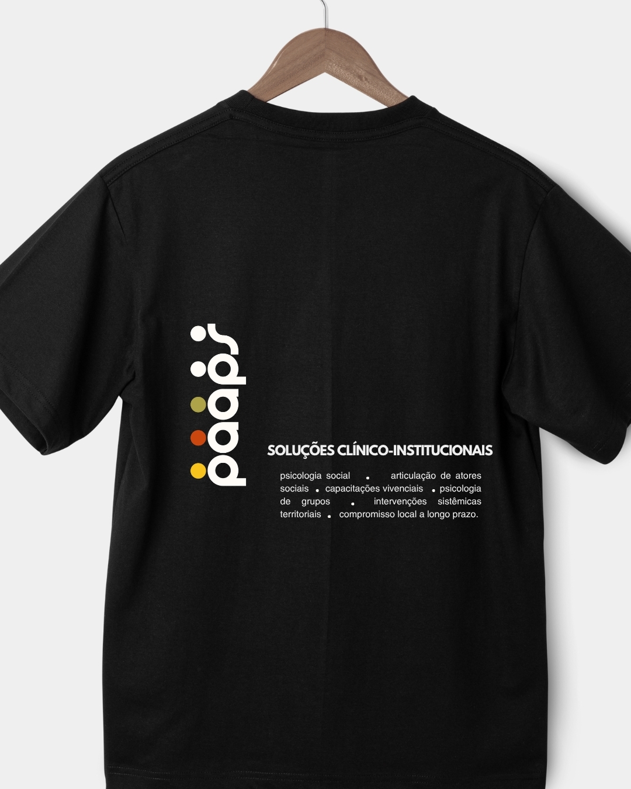
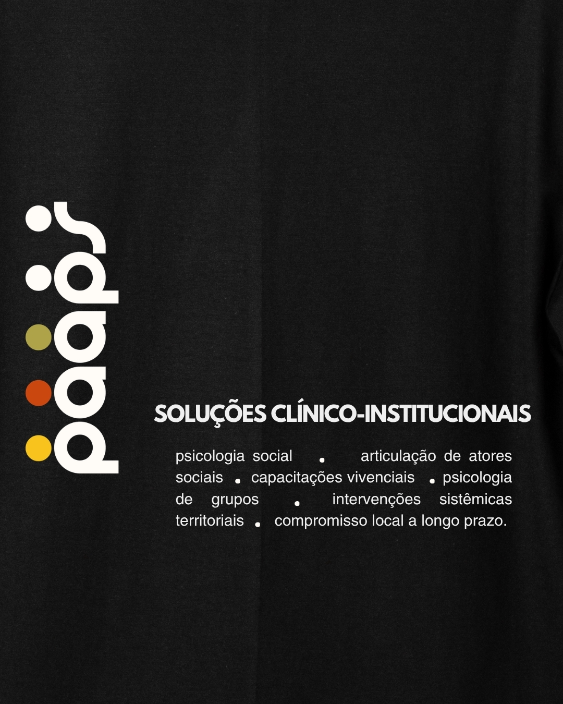

A rede de saúde mental para as políticas públicas do futuro.
Um coletivo de psicólogas sociais e sistêmicas especializadas em saúde mental coletiva como política pública. Desde 2014, dentro do território.
Presente em
Dois caminhos. Um método.
Programa PAAPS
Para prefeituras, ONGs e empresas que querem cuidado contínuo das suas equipes. Três dispositivos integrados — grupos terapêuticos, plantão psicológico na rede e capacitações vivenciais — que operam juntos como uma política de cuidado de longo prazo, não como evento isolado.
Conhecer o ProgramaEstruturação de Programa / Projeto Social / ESG
Para quem já tem uma política, um projeto ou um programa em execução — e precisa de equipe técnica especializada para estruturá-lo, fortalecê-lo ou implementá-lo com método real. A PAAPS vai ao território, vincula com quem está lá e constrói junto com a população atendida. Sem fórmula pronta. Com Teoria da Mudança, grupos operativos, diagnóstico territorial e suporte psicológico qualificado.
Saiba maisO Programa PAAPS
Grupos Terapêuticos
Dispositivo contínuo de cuidado psicológico integrado à rotina institucional. Nomeia o que é vivido mas não dito. Processa coletivamente o que adoece em silêncio. Conduzido por psicólogas especializadas em Psicologia Social-Comunitária, com metodologia dos Grupos Operativos e Psicodrama.
Plantão Psicológico na Rede
Acolhimento qualificado e itinerante, no tempo real do trabalho. Na borda entre o não-dito e o urgente. Legitima o sofrimento, reorganiza decisões, abre porta para cuidados mais intensivos. Disponível com 2 a 3 horas de antecedência, presencial ou online.
Capacitações Vivenciais
O grupo não recebe soluções prontas — ele produz junto. Coconstruídas a partir do que já existe no território, com a metodologia dos Grupos Operativos articulada à Psicologia Social-Comunitária latino-americana. Formato: encontros únicos (1h30 a 2h) ou ciclos de até 6 encontros.
Temas coconstruídos a partir da realidade de cada município:
- Temperamentos humanos — tipos psicológicos para aprender a lidar com a diferença entre o eu e o outro
- Machismo e assédio moral no trabalho — adaptado ao setor (saúde, assistência social, atendimento ao público)
- Prevenção e cuidado em saúde mental — estratégias de cuidado com a saúde mental do outro e de si mesma
- Inclusão e manejo com crianças autistas
- Redes sociais e TikTok como questão do território — quando isso emerge como demanda local
- E o que a realidade daquele município pedir — os temas são sempre adequados ao que está acontecendo na cidade

Bela Vista de Minas, MGResultados reais.
Em 5 meses.
de aderência à psicoterapia de servidoras
de aderência em atividades e oficinas grupais
de ações e intervenções grupais
de Plantão Psicológico disponibilizados
Prefeitura de Bela Vista de Minas — 5 meses consecutivos de PAAPS.
O que muda no dia a dia
Nossos projetos com as equipes de programas sociais e políticas públicas apresentam, em média:
se sentem mais seguros para a execução do seu trabalho no dia a dia.
de crescimento na aderência de servidores em atividades e oficinas grupais — em 5 meses de PAAPS.
das equipes afirmam estarem mais colaborativas no dia a dia, e o trabalho estar sendo mais leve.
afirma reconhecer mudanças expressivas em pelo menos 1 de seus colegas de trabalho.
Para quem é o PAAPS
Prefeituras
Cuidado contínuo das equipes da Saúde, Educação e Assistência Social. Programa PAAPS para servidoras + Estruturação de Programa Municipal. Para ESF, NASF, AEE, RAPS e outros equipamentos da rede pública.
Viabilização: Licitação Comum · Inexigibilidade (Art. 74 / Lei 14.133/2021) · Dispensa (Art. 75) · CPSI · UST
ONGs
Para equipes de ONGs com sede presencial, de atendimento ao público ou execução de projetos sociais. Programa PAAPS para equipes + Criação e Implementação de Projeto Social. A PAAPS vai ao território, vincula, e constrói junto.
Empresas
Para empresas que querem investimento ESG com presença territorial real. A PAAPS vai ao território, vincula, e executa o projeto junto com a população atendida. A empresa traz o projeto e a população — a PAAPS faz diagnóstico, plano e execução.
- → Psicoterapia Semanal como Benefício Institucional (parceria Associação Allos — online, individual, semanal)
- → Programa de Lideranças Humanizadas e Estratégicas
- → Rodas de Mediação de Conflitos — Círculos de Paz (Justiça Restaurativa)
- → Preparação para Aposentadoria — transição identitária, subjetiva e social
- → Programa Esperança — consultoria em Teoria da Mudança para políticas em rede
- → TEAtrar — projeto de teatro para crianças do espectro autista (coord. Gabriela Diniz)
Uma equipe técnica.
Não uma consultora solitária.
O PAAPS é composto por psicólogas sociais e sistêmicas com especialização em políticas públicas, metodologias de grupo, mediação de conflitos e psicologia social-comunitária latino-americana. Entramos no território como parceiras estratégicas — não como palestrantes que somem depois.

Equipe Técnica
Psicólogas sociais e sistêmicas especializadas em intervenção grupal, políticas públicas e Psicologia Social-Comunitária latino-americana.
Supervisão Clínica
Processo contínuo de supervisão que garante qualidade e consistência em cada território. O cuidado de quem cuida começa aqui.

Presença Territorial
Imersão presencial nos equipamentos — CRAS, CREAS, UBS, escolas. Pisamos no chão antes de propor qualquer coisa.
Sua equipe merece cuidado que permanece.
45 minutos de conversa gratuita para mapear os desafios da sua gestão. Sem compromisso. Sem fórmula pronta.